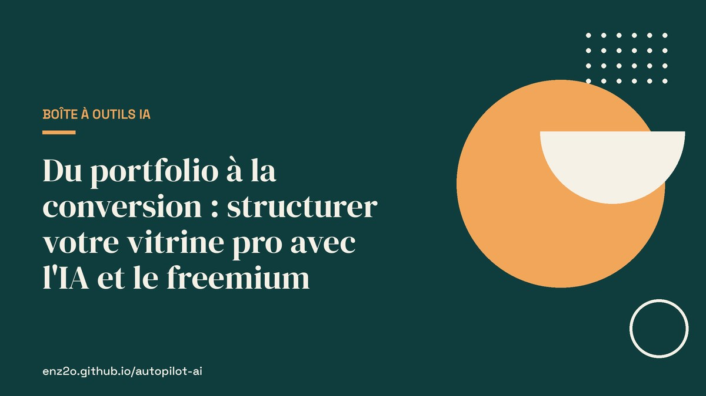

Du portfolio à la conversion : structurer votre vitrine pro avec l'IA et le freemium
2026-11-21
Article contenant des liens affiliés.

Que vous soyez étudiant en recherche d'un premier stage, freelance en quête de clients ou créateur de contenu désireux de professionnaliser votre image, la présentation de votre travail est déterminante. Pourtant, la majorité des acteurs du Web commettent encore l'erreur d'envoyer un simple fichier PDF statique ou un lien vers un dossier Drive en désordre.
Aujourd'hui, un portfolio efficace ne se contente pas de montrer ce que vous savez faire : il raconte une histoire, prouve votre valeur concrète et convertit immédiatement l'attention du visiteur en prise de contact ou en opportunité commerciale. Bonne nouvelle : il est tout à fait possible de bâtir une vitrine interactive et automatisée sans budget et sans compétences techniques poussées.
Voici le guide pas à pas pour construire votre vitrine professionnelle à l'aide des meilleures solutions d'intelligence artificielle et d'outils freemium.
1. Pourquoi le portfolio classique ne suffit plus aujourd'hui
Le marché est saturé de profils aux compétences similaires sur le papier. Pour sortir du lot, votre présence en ligne doit répondre à trois exigences majeures :
- Raconter le processus, pas seulement le résultat : Vos prospects ou futurs recruteurs veulent comprendre comment vous résolvez un problème concret.
- Capturer l'intérêt au moment opportun : Si un visiteur apprécie votre travail, il doit pouvoir s'inscrire à votre newsletter, réserver un appel ou télécharger une ressource d'un simple clic.
- Être mis à jour sans effort : Si la mise à jour de votre site prend trois heures, vous abandonnerez la maintenance au bout de deux semaines.
L'alliance entre l'intelligence artificielle pour la structuration des textes et les plateformes freemium modernes permet de lever l'ensemble de ces freins en un temps record.
2. Étape 1 : Structurer des études de cas captivantes avec l'IA
Au lieu d'aligner des captures d'écran sans contexte, présentez chaque projet sous la forme d'une étude de cas structurée. Pour cela, appuyez-vous sur la méthode STAR (Situation, Tâche, Action, Résultat).
Plutôt que de repartir d'une page blanche, utilisez une IA textuelle gratuite (comme Claude, ChatGPT ou Mistral AI) en lui fournissant vos notes brutes.
Exemple de prompt à réutiliser :
« Je vais te donner des notes rapides sur un projet que j'ai réalisé. Rédige une étude de cas synthétique et captivante d'environ 200 mots en suivant la structure : 1. Le défi du client, 2. Ma méthode et mes choix stratégiques, 3. Les résultats mesurables. Adopte un ton professionnel et direct. Voici mes notes : [Insérer vos notes] »
L'IA se chargera de corriger le style, de hiérarchiser les idées et de mettre en avant vos accomplissements majeurs. Répétez l'opération pour trois à cinq projets clés. La qualité prime toujours sur la quantité.
3. Étape 2 : Mettre en scène ses réalisations visuelles
Un texte percutant a besoin d'une présentation irréprochable. Vous n'avez pas besoin d'être un expert sur la suite Adobe pour obtenir un rendu moderne.
- Concevoir des maquettes (mockups) professionnelles : Des outils gratuits comme Canva ou Figma permettent de glisser facilement vos captures d'écran dans des visuels d'ordinateurs, de smartphones ou de documents imprimés.
- Illustrer les concepts complexes : Si votre travail est principalement textuel ou analytique (rédaction SEO, stratégie marketing, code), utilisez des schémas visuels récapitulatifs. Des générateurs de diagrammes basés sur l'IA ou les modèles préconçus de Canva transforment une simple liste à puces en une infographie élégante.
Prenez le temps d'harmoniser vos visuels avec une palette de deux ou trois couleurs principales maximum pour conserver une cohérence visuelle sur l'ensemble de votre vitrine.
4. Étape 3 : Assembler son hub et automatiser la conversion
C'est ici que la magie opère. Au lieu de dissocier votre site internet, votre système de formulaires et vos propositions commerciales, vous pouvez centraliser l'ensemble sur une plateforme unique.
Pour héberger votre portfolio, collecter des adresses email et même vendre vos premiers services ou produits digitaux, une plateforme freemium intuitive est idéale. C'est exactement ce que propose Systeme.io, une solution tout-en-un française qui dispose d'un plan gratuit très généreux. Vous pouvez y créer une page vitrine responsive, y intégrer vos études de cas, ajouter un formulaire de prise de rendez-vous ou distribuer un guide offert (lead magnet) pour commencer à bâtir votre liste de prospects dès aujourd'hui.
L'avantage d'utiliser une infrastructure comme Systeme.io réside dans la fluidité du parcours : le visiteur découvre vos projets, télécharge votre ressource gratuite et entre directement dans votre séquence d'emails automatisée sans quitter votre univers.
5. Maintenir un environnement de travail ergonomique
Bâtir son écosystème digital demande quelques heures de concentration intense. L'optimisation software ne doit pas vous faire oublier l'optimisation physique de votre espace de travail. Pour préserver votre posture et votre énergie pendant vos sessions de création, veillez à adopter une bonne installation matérielle.
L'utilisation d'un support ordinateur portable ergonomique permet d'élever votre écran à la hauteur de vos yeux, évitant ainsi les tensions cervicales répétées. De même, travailler dans un espace bien éclairé avec une lampe de bureau led pliable réduit considérablement la fatigue oculaire lors des sessions de rédaction du soir.
6. Le plan d'action en 4 heures pour passer à l'acte
Pour éviter de procrastiner sur la création de votre nouvelle vitrine, découpez le travail en quatre tranches horaires bien distinctes :
- Heure 1 (Rédaction IA) : Rassemblez vos notes brutes sur 3 projets et générez vos études de cas structurées avec l'assistance d'un modèle de langage.
- Heure 2 (Visuels) : Créez 3 à 6 mockups visuels attrayants sur Canva pour illustrer chaque projet.
- Heure 3 (Mise en page & Capture) : Montez votre page vitrine sur votre outil d'hébergement freemium, ajoutez-y un formulaire d'inscription simple et intégrez vos contenus.
- Heure 4 (Relecture & Diffusion) : Testez l'affichage sur mobile, vérifiez la fluidité des formulaires et ajoutez le lien de votre nouveau portfolio sur vos profils sociaux (LinkedIn, X, Bio Instagram).
---Alternativement, vous n'avez pas besoin d'attendre d'avoir 10 projets complets pour lancer votre site. Une étude de cas parfaitement documentée et une proposition de valeur claire suffisent largement pour démarrer et capter vos premières opportunités.